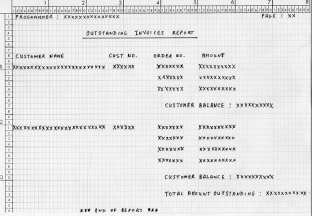

Introduction
A program is required that will examine the Aromamora Customer and Invoice files and from them produce a report showing the unpaid customer invoices. The Cobol Report-Writer must be used to create the report.
Data Files
Customer File
The Customer File holds details of all Aromamora customers. It is an indexed file with the following record description.
|
Field |
Key type |
Type |
Length |
Value |
Customer-Number |
Primary |
9 |
6 |
- |
Customer-Name |
ALT with Duplicates |
X |
25 |
Upper-Case |
Customer-Address |
-- |
X |
40 |
- |
Country |
ALT with Duplicates |
X |
15 |
Upper-Case |
Customer-Balance |
-- |
9 |
7 |
-99999.99 - 0.0 |
Date-Of-Last-Order |
-- |
9 |
8 |
YYYYMMDD |
The Country field is used in some reports to group customers by location.
The Customer-Balance field holds the amount owed by the customer to Aromamora. Since payments are only accepted when they apply to a specific sale this balance should never be greater than 0.
The Date-Of-Last-Order field is used to identify inactive customers.
Invoice File
The Invoice File holds details of all unpaid invoices. When goods are sold to Aromamora customers the sale is recorded in the Invoice File (by way of a transaction file) and an invoice is sent to the customer. Customers pay for goods on receipt of an invoice. When a customer payment is received the payment is matched to a particular invoice which is then deleted from the file and recorded in a sequential Invoice Archive File. Aromamora customers always pay the exact amount specified on the invoice.
The Invoice File is an Indexed file with the following record description;
|
Field |
Key type |
Type |
Length |
Value |
Order-Number |
Primary |
9 |
7 |
- |
Customer-Number |
ALT with Duplicates |
9 |
6 |
- |
Invoice-Amount |
-- |
9 |
7 |
0.01-9999.99 |
The Outstanding Invoices Report
The report must show any outstanding customer invoices in the Invoice File. The report is based on the Customer and Invoice files (see previous specification for details) and must be printed sequenced on ascending Customer-Name.
Money values must be printed using floating dollar signs and comma insertion. The page number should be zero suppressed. Change page after line 49 unless the Customer Balance, the Total Amount Outstanding or report footing is the next thing to be printed.
| Line 1-8 | Page headings. To be printed at the top of each page. The programmer field should contain your name. |
| Line 10-15 | Customer Detail lines. Suppress the Customer Name and Customer Number after their first occurrence. See also lines 21-27. |
| Line 17 | Customer Balance Line. Amount owed by the customer. Printed at the end of the Customer Detail lines. See also line 30. |
| Line 33 | Total amount outstanding. Sum of the amounts owed by each customer. Printed at the end of the report |
| Line 36 | Report footing. Printed at the end of the report. |

Click for full size version
{kind=link}